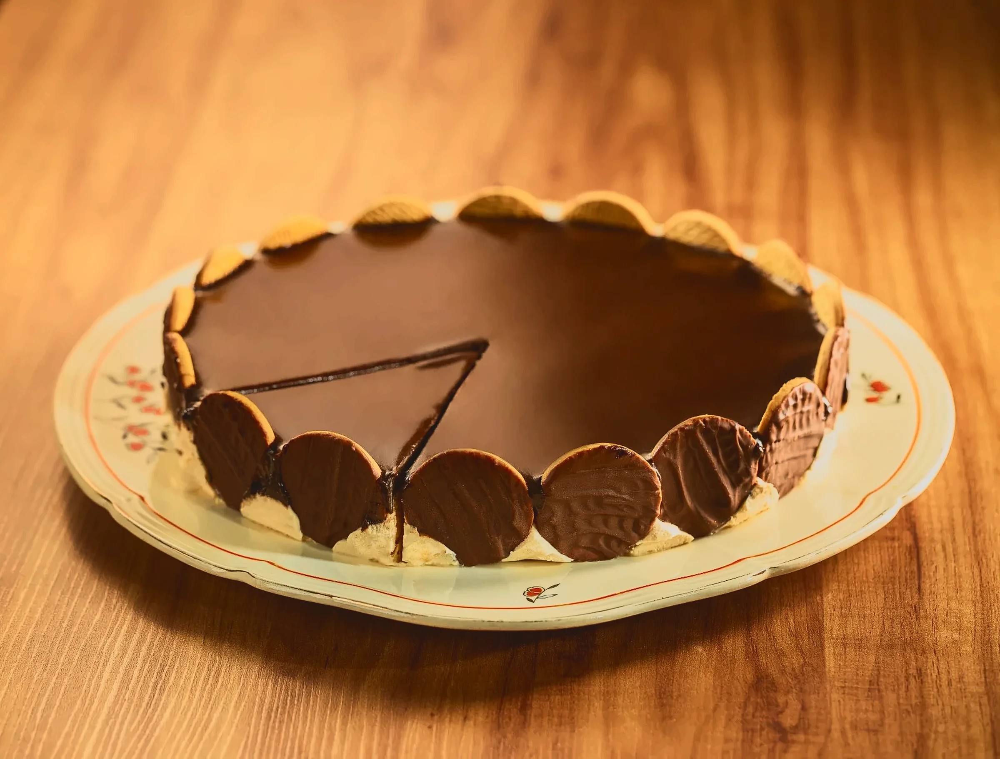
Nosso cardápio
Virado à paulista
Tutu de feijão, arroz, bisteca, linguiça, couve refogada, torresmo, ovo frito e banana à milanesa
Peça agora →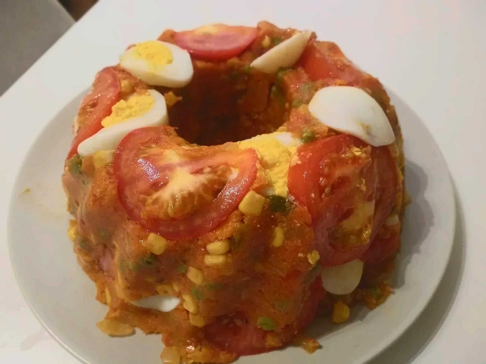
Cuscuz paulista
Farinha de milho, sardinha, palmito, ervilha, tomate, ovo cozido e cheiro-verde, servido enformado
Peça agora →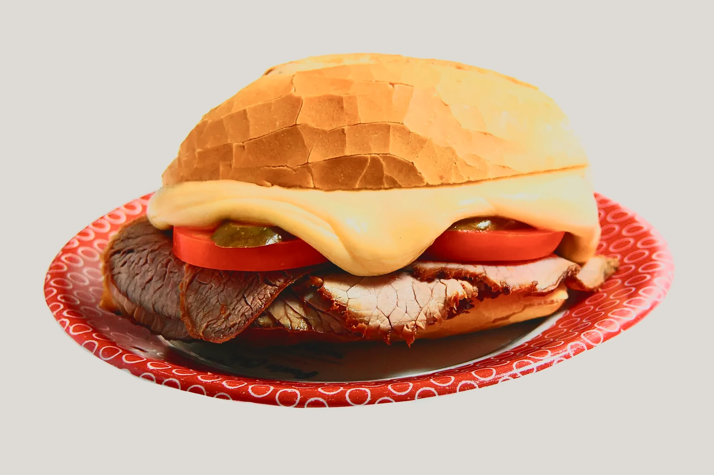
Bauru
Pão francês, rosbife, tomate, pepino em conserva e queijo derretido no banho-maria. Receita de Bauru, SP
Peça agora →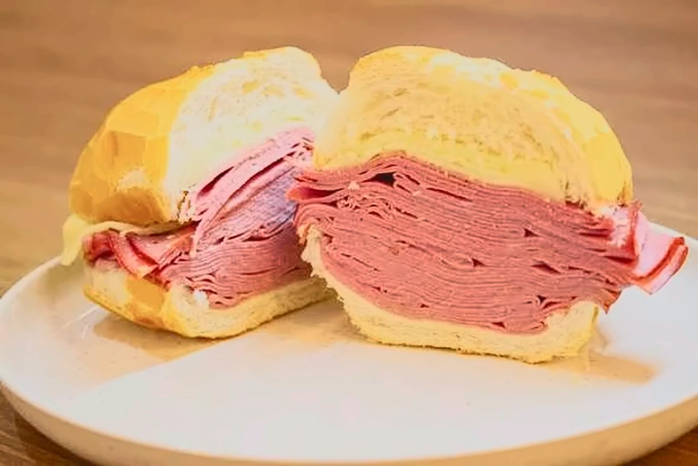
Sanduíche de mortadela
Pão francês com mortadela fatiada fina e empilhada e queijo derretido, como no Mercadão de São Paulo
Peça agora →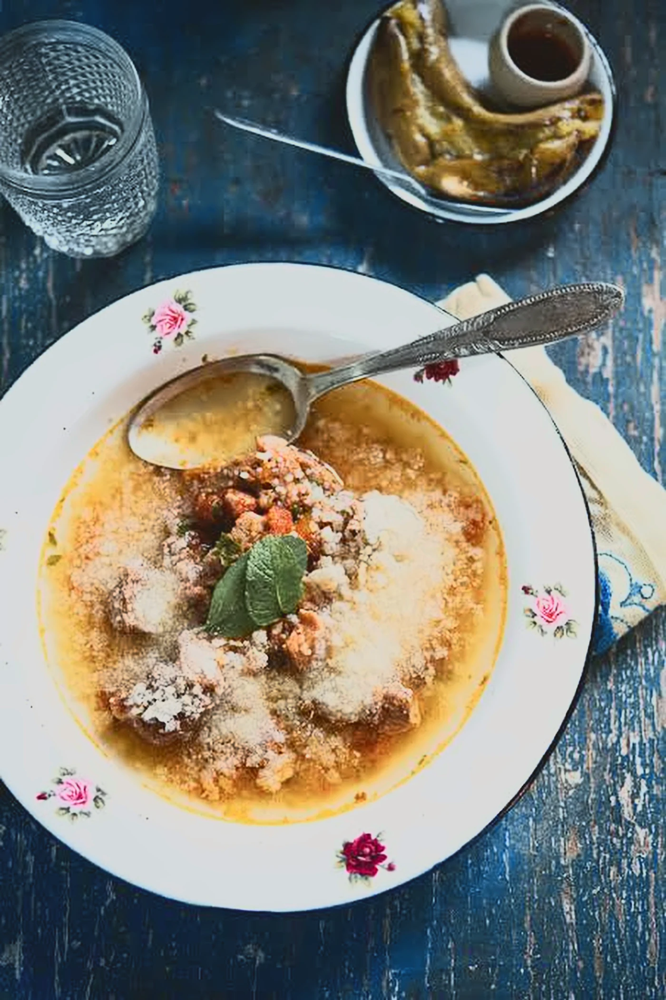
Afogado
Carne bovina cozida devagar em caldo temperado, servida com farinha de mandioca. Tradição das festas do Divino no Alto Tietê
Peça agora →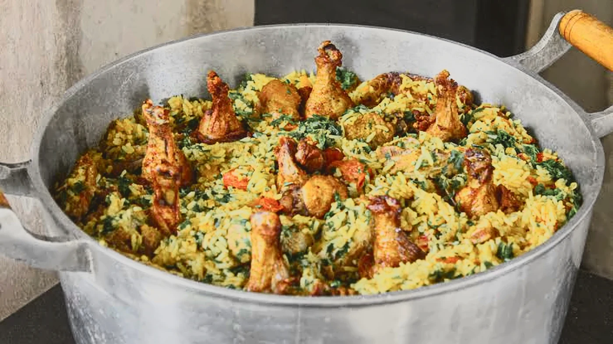
Galinhada caipira
Arroz cozido com frango caipira, açafrão-da-terra e cheiro-verde, feito na panela
Peça agora →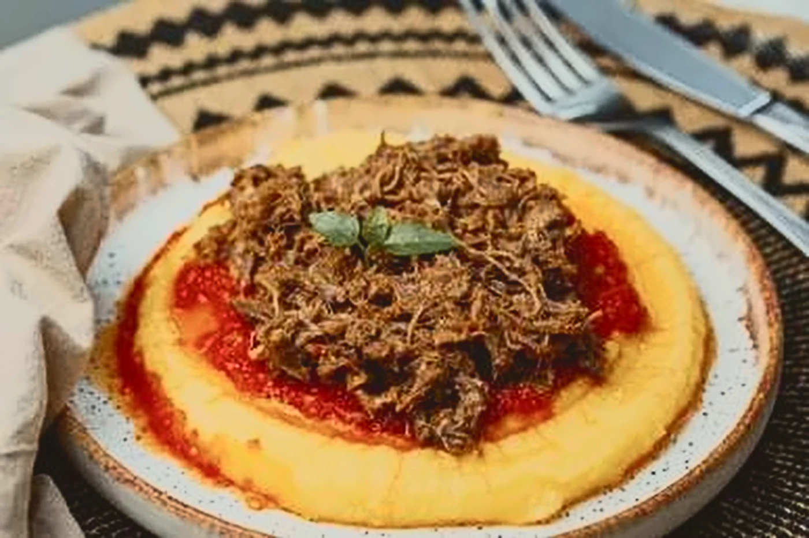
Polenta com ragu
Polenta cremosa com ragu de carne desfiada e molho de tomate, herança da imigração italiana no interior paulista
Peça agora →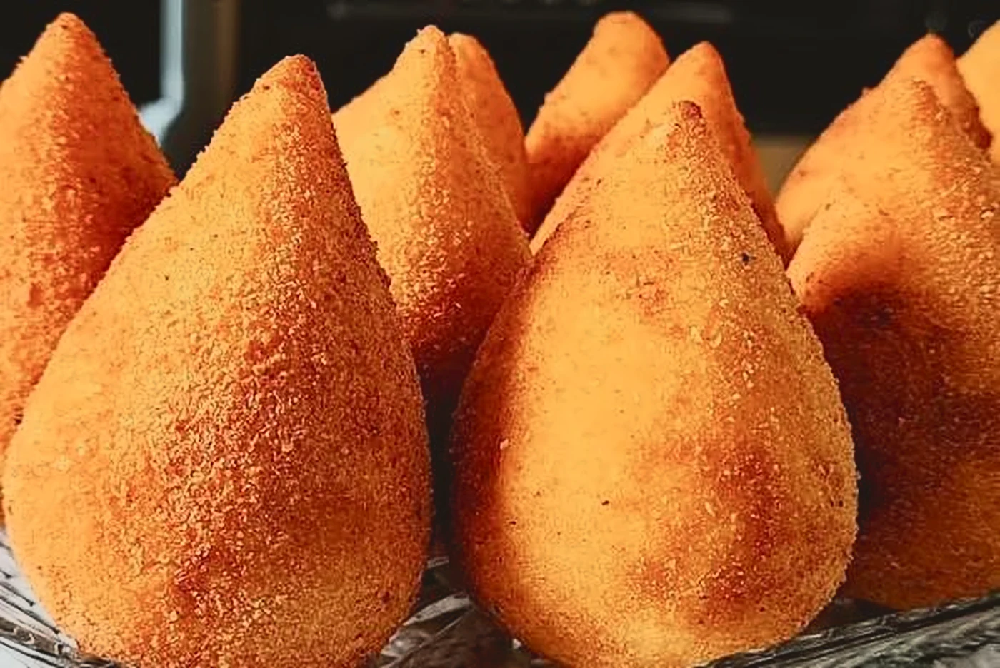
Coxinha
Massa de batata, frango desfiado temperado e casquinha crocante de farinha de rosca
Peça agora →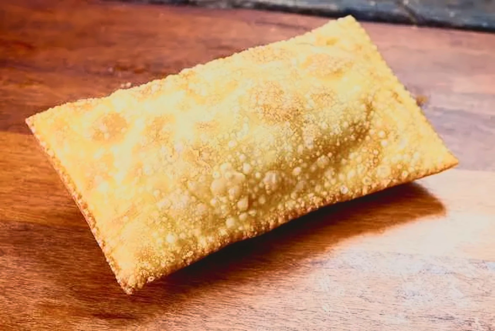
Pastel de feira
Massa fina e bolhuda, frita na hora. Carne, queijo ou palmito
Peça agora →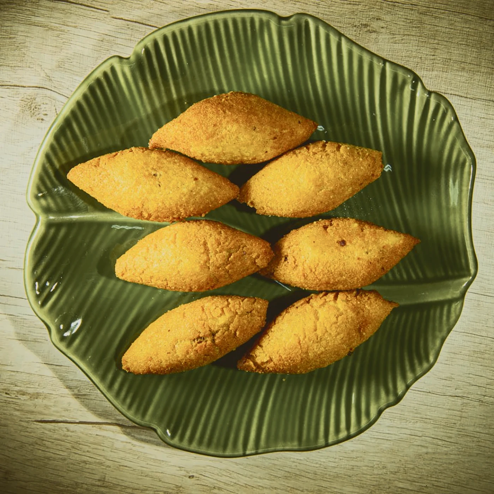
Bolinho caipira
Massa de farinha de milho com recheio de carne moída, receita do Vale do Paraíba
Peça agora →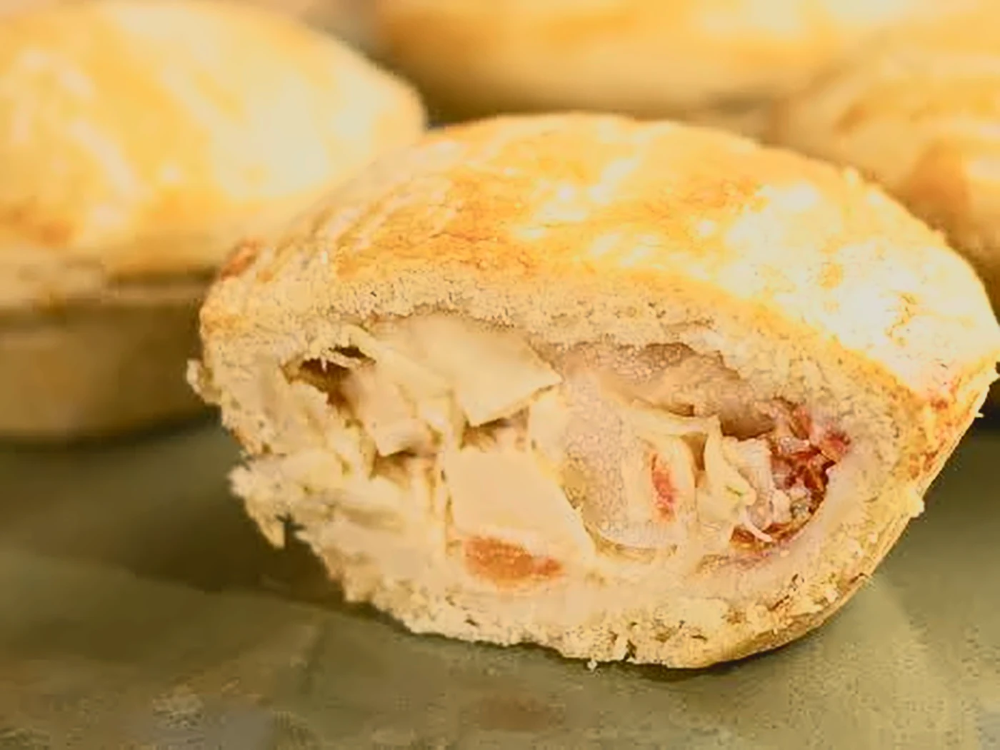
Empada de palmito
Massa podre que desmancha e recheio cremoso de palmito com azeitona
Peça agora →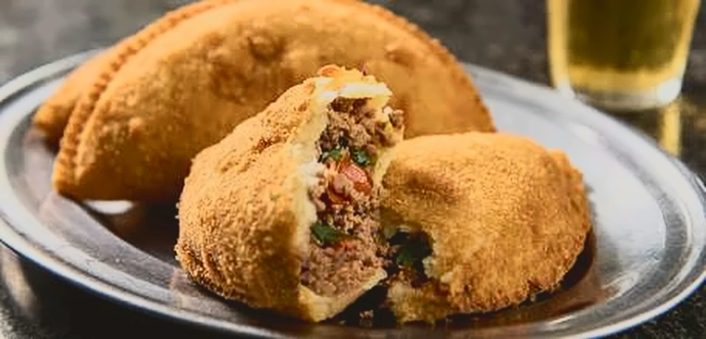
Risole de carne
Massa cozida recheada de carne moída, empanada e frita na hora
Peça agora →Torta holandesa
Base de biscoito, creme leve de baunilha, cobertura de chocolate e biscoitos na borda. Criação de Campinas
Peça agora →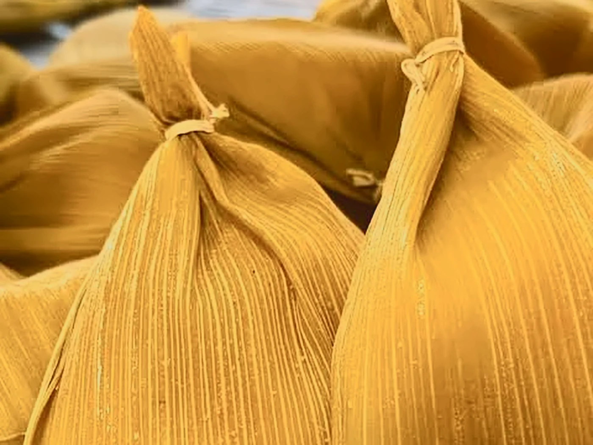
Pamonha de Piracicaba
Milho verde ralado e cozido na palha. Doce, salgada ou com queijo
Peça agora →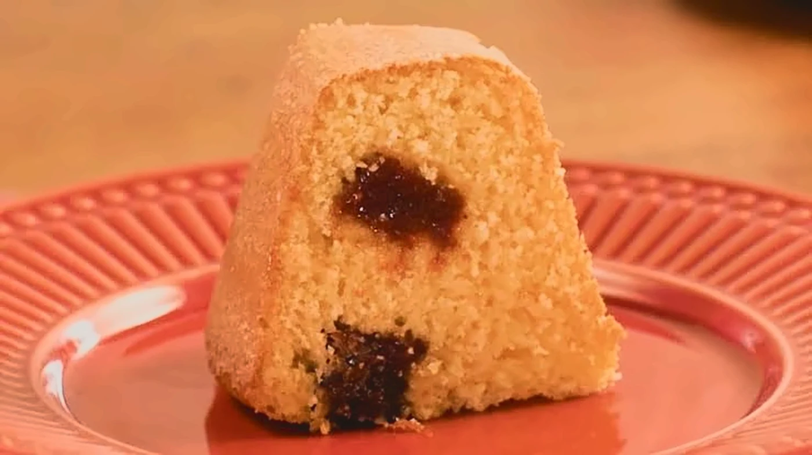
Bolo de fubá com goiabada
Bolo de fubá fofinho com pedaços de goiabada, como no café da tarde da roça
Peça agora →Para empresas
Comida de casa para o seu time inteiro
Do café da tarde à festa de fim de ano, levamos bandejas de salgados, sanduíches e tortas para o seu escritório em Campinas e região.
Virado à paulista
Cuscuz paulista
Bauru
Sanduíche de mortadela
Afogado
Galinhada caipira
Polenta com ragu
Coxinha
Pastel de feira
Bolinho caipira
Empada de palmito
Risole de carne
Pão de linguiça
Torta holandesa
Pamonha de Piracicaba
Curau de milho
Bolo de fubá com goiabada
Pudim de leite
Romeu e Julieta
Desde 1968
Tudo começou num fogão a lenha em Barão Geraldo
Em 1968, Dona Alzira Bonfim passou a vender pamonha na janela de casa, enquanto o marido, Tião, consertava bicicletas na garagem. No primeiro sábado sobraram duas. No terceiro, a fila dobrou a esquina.
Tião largou a oficina para cuidar do caixa, a garagem ganhou três mesas e o caderno de receitas da família, manchado de calda, virou o nosso cardápio.
Hoje a neta Marina comanda a cozinha com as mesmas panelas de ferro. O caderno segue aberto na bancada, e a torta holandesa de sábado ainda sai do jeito que a vó anotou.
Ver os doces →Receba novidades
Pratos da semana, safra da pamonha e novas lojas.
Onde estamos
Rua da Pamonha, 1968
Barão Geraldo, Campinas - SP
- Terça a sexta11h às 20h
- Sábado e domingo10h às 21h
- SegundaSó o virado, das 11h às 15h